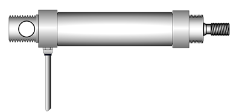
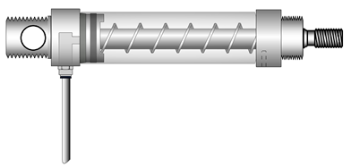
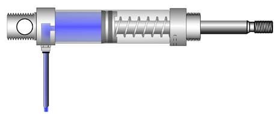

IMPLEMENTACIÓN NEUMÁTICA
Operaciones lógicas en circuitos neumáticos
Las operaciones y funciones lógicas, junto con el Álgebra de Boole como herramienta matemática para expresarlas y formalizarlas, pueden implementarse en distintas tecnologías.
En la sección anterior presentamos las funciones lógicas básicas a partir de su implementación en circuitos eléctricos:
- OR ó SUMA LÓGICA
- AND ó PRODUCTO LÓGICO
- NOT ó NEGACIÓN
A continuación, veremos cómo estas mismas funciones pueden implementarse en otra tecnología: la Neumática.
La neumática utiliza aire comprimido para accionar actuadores que realizan un trabajo mecánico. Para conducir, regular y direccionar este fluido se emplean válvulas neumáticas. Dentro del amplio espectro de válvulas y actuadores disponibles, nos centraremos en los casos más sencillos, poniendo el foco al igual que en la sección anterior, exclusivamente en su comportamiento funcional o lógico.
Comencemos por presentar los componentes básicos de un circuito neumático.
ACTUADOR LINEAL DE SIMPLE EFECTO
Se trata de un cilindro que contiene un émbolo en su interior. Cuando se aplica presión de aire en la cámara del cilindro, el émbolo avanza por efecto de la fuerza ejercida por el aire comprimido.
Al cesar la presión y despresurizar la cámara, un resorte interno empuja el émbolo hacia su posición inicial de reposo o cierre.


En las imágenes se representa un actuador de simple efecto en estado de reposo (cerrado por la fuerza que ejerce el resorte interno), y en estado de avance al ingresar aire a presión y empujar hacia adelante el émbolo.
VÁLVULA DIRECCIONAL CON ACCIONAMIENTO MANUAL POR PULSADOR
La válvula que utilizaremos en los ejemplos es una válvula direccional que permite direccionar el flujo de aire comprimido. Se denomina válvula 3/2, ya que posee tres conexiones neumáticas y dos posiciones de operación.
En las siguientes figuras se muestra su funcionamiento:

En esta primera imagen, que corresponde a la primera posición de la válvula, la conexión 1 (entrada de aire comprimido) se encuentra obstruida, mientras que la conexión 2 (salida hacia el actuador) se comunica internamente con la conexión 3 (escape a la atmósfera). En esta posición, el actuador queda despresurizado y por tanto cerrado.

En la segunda imagen, se observa que al accionar manualmente el pulsador de la válvula, la conexión 1 (entrada de aire) se vincula con la conexión 2, enviando aire comprimido hacia el actuador. De este modo, se presuriza la cámara del actuador, generando una fuerza sobre el émbolo que supera la resistencia del resorte interno, provocando el movimiento del actuador hacia su posición activa o extendida.

Este sencillo circuito neumático sería el análogo al circuito eléctrico elemental de un pulsador y una lámpara estudiado en la sección anterior.

Donde “a” es la válvula 3/2 que se comporta como variable independiente con dos estados posibles, y “z” es el actuador neumático que se comporta como variable dependiente.
Para el actuador “z”:
· Estado 1: Actuador CERRADO = " 0 "
· Estado 2: Actuador ABIERTO = " 1 "
Para el válvula 3/2 neumática “a”:
· Estado 1: Válvula SIN PRESIONAR (VÁLVULA CERRADA) = " 0 "
· Estado 2: Válvula PRESIONADA (VÁLVULA ABIERTA) = " 1 "
Nota:
Observar cómo se modifican los estados ACTIVO e INACTIVO de los componentes según la implementación tecnológica.
Como ejemplo, recordemos que al pulsador eléctrico lo consideramos INACTIVO al estar abierto, pero por el contrario a esta válvula neumática la estamos considerando INACTIVA al estar “cerrada” y no permitir la llegada de aire al actuador (lo opuesto sucede para el caso de ACTIVACIÓN).
¿Cómo sería la implementación de las funciones OR, AND y NOT en este circuito neumático?
OR ó SUMA LÓGICA:
Queremos diseñar un circuito neumático que cumpla con la tabla de verdad característica de una función lógica OR ó SUMA LÓGICA:
Para lograrlo, tal como hicimos en la implementación eléctrica, un primer circuito tentativo sería colocar dos válvulas 3/2 en paralelo conectadas al actuador lineal.

Esta solución parece en principio funcionar correctamente, sin embargo, se debe tener en cuenta que al presionar sólo una de las válvulas a ó b, el aire encuentra un camino para fugar a atmósfera a través de la conexión 3 de escape de la otra válvula, dejando sin presión la entrada del actuador que permanece sin moverse.

La implementación neumática exige para esta función lógica la incorporación de un elemento adicional que no era necesario en la implementación eléctrica.
 }
}
Necesitamos una válvula especial denominada “válvula de selectividad” ó “válvula lógica OR”, cuya función es precisamente bloquear el paso de aire de un lado a otro según desde donde se alimente.
AND ó PRODUCTO LÓGICO:
Para esta función alcanza, de forma análoga a la implementación eléctrica, con colocar dos válvulas 3/2 en serie con el actuador neumático.

NEGACIÓN:
Para que el actuador neumático inicie extendido y cierre al presionarse la el válvula 3/2 de mando, podemos utilizar otra válvula 3/2 auxiliar que tenga la particularidad de ser NA (normal abierta) y accionada por una señal de aire:

En el esquema, la válvula auxiliar NA funciona como “ ”.
De esta manera, el actuador inicia con presión de aire y permanece abierto mientras no se presione la válvula “a” de mando.
Al presionarse, conmuta la válvula auxiliar, despresurizando el actuador y logrando que cierre por la fuerza que ejerce el resorte interno.